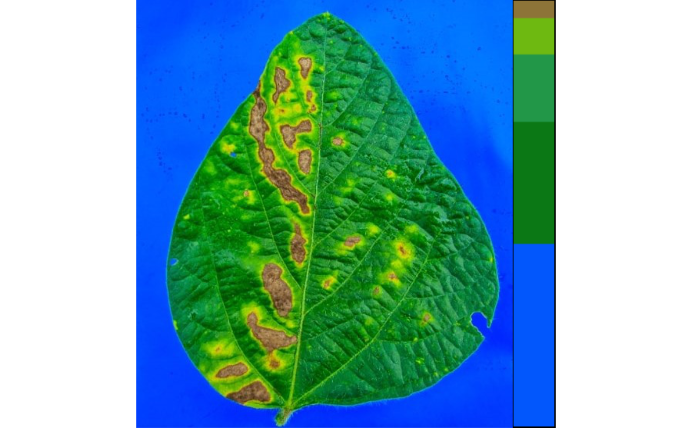

image_palette() creates image palettes by applying the k-means algorithm
to the RGB values.
Usage
image_palette(
img,
pattern = NULL,
npal = 5,
proportional = TRUE,
colorspace = c("rgb", "hsb"),
remove_bg = FALSE,
index = "B",
plot = TRUE,
save_image = FALSE,
prefix = "proc_",
dir_original = NULL,
dir_processed = NULL,
return_pal = FALSE,
parallel = FALSE,
workers = NULL,
verbose = TRUE
)Arguments
- img
An image object.
- pattern
A pattern of file name used to identify images to be imported. For example, if
pattern = "im"all images in the current working directory that the name matches the pattern (e.g., img1.-, image1.-, im2.-) will be imported as a list. Providing any number as pattern (e.g.,pattern = "1") will select images that are named as 1.-, 2.-, and so on. An error will be returned if the pattern matches any file that is not supported (e.g., img1.pdf).- npal
The number of color palettes.
- proportional
Creates a joint palette with proportional size equal to the number of pixels in the image? Defaults to
TRUE.- colorspace
The color space to produce the clusters. Defaults to
rgb. Ifhsb, the color space is first converted from RGB > HSB before k-means algorithm be applied.- remove_bg
Remove background from the color palette? Defaults to
FALSE.- index
An image index used to remove the background, passed to
image_binary().- plot
Plot the generated palette? Defaults to
TRUE.- save_image
Save the image after processing? The image is saved in the current working directory named as
proc_*where*is the image name given inimg.- prefix
The prefix to be included in the processed images. Defaults to
"proc_".- dir_original, dir_processed
The directory containing the original and processed images. Defaults to
NULL. In this case, the function will search for the imageimgin the current working directory. After processing, whensave_image = TRUE, the processed image will be also saved in such a directory. It can be either a full path, e.g.,"C:/Desktop/imgs", or a subfolder within the current working directory, e.g.,"/imgs".- return_pal
Return the color palette image? Defaults to
FALSE.- parallel
If TRUE processes the images asynchronously (in parallel) in separate R sessions running in the background on the same machine.
- workers
A positive numeric scalar or a function specifying the number of parallel processes that can be active at the same time. By default, the number of sections is set up to 30% of available cores.
- verbose
If
TRUE(default) a summary is shown in the console.
Value
image_palette() returns a list with two elements:
palette_listA list withnpalcolor palettes of classImage.jointAn object of classImagewith the color palettesproportionsThe proportion of the entire image corresponding to each color in the palettergbsThe average RGB value for each palette
Examples
# \donttest{
library(pliman)
img <- image_pliman("sev_leaf.jpg")
pal <- image_palette(img, npal = 5)

# }